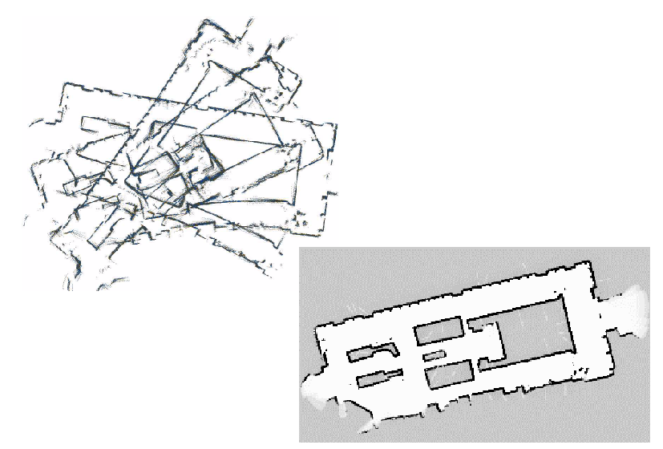

Humans are excellent navigators due to their remarkable ability to build cognitive maps [†]McNamara, T. P., Hardy, J. K. & Hirtle, S. C. Subjective hierarchies in spatial memory. Journal of Experimental Psychology: Learning, Memory, and Cognition 15, 211 (1989) which form the basis of spatial memory [†]Chun, M. M. & Jiang, Y. Contextual cueing: Implicit learning and memory of visual context guides spatial attention. Cognitive psychology 36, 28–71 (1998), [†]Huang, C. et al. Visual language maps for robot navigation in 2023 IEEE International Conference on Robotics and Automation (ICRA) (2023), 10608–10615. However, when it comes to AMRAutonomous Mobile RoboticsAutonomous Mobile Robotics, we unfortunately need to be more hands on. All of the localisation strategies we have discussed previously require active human effort to install the robot into a space. Artificial environmental modifications may be necessary to reduce ambiguity [†]Meyer-Delius, D. et al. Using artificial landmarks to reduce the ambiguity in the environment of a mobile robot in 2011 IEEE International Conference on Robotics and Automation (2011), 5173–5178. Even if this is not so, a map of the environment must be created for the robot.
But a robot which localizes successfully has the right sensors for detecting the environment, and so the robot ought to build its own map.
This ambition goes to the heart of AMRAutonomous Mobile RoboticsAutonomous Mobile Robotics. In prose, we can express our eventual goal as follows:
While we have system which allows certain level of intelligence to robots, most applications require a connected network or a central node to achieve any autonomous action [†]Hazik, J. et al. Fleet management system for an industry environment. Journal of Robotics and Control (JRC) 3, 779–789 (2022), [†]Xidias, E., Zacharia, P. & Nearchou, A. Intelligent fleet management of autonomous vehicles for city logistics. Applied Intelligence 52, 18030–18048 (2022). Accomplishing this goal purely using internal components in a robust is probably years away, but an important sub-goal is the invention of techniques for autonomous creation and modification of an environment map. Of course a AMRAutonomous Mobile RoboticsAutonomous Mobile Robotics’s sensors have only limited range, and so it must physically explore its environment to build such a map. So, the robot must not only create a map but it must do so while moving and localizing to explore the environment. This is often called the SLAMSimultaneous Localisation and MappingSimultaneous Localisation and Mapping problem, (...) Computational problem of constructing or updating a map of an unknown environment while simultaneously keeping track of an agent’s location within it. While this initially appears to be a chicken or the egg problem, there are several algorithms known to solve it in, at least approximately and in reasonable time for certain environments. Popular solutions include the particle filter, extended Kalman filter, covariance intersection, and GraphSLAM. SLAM algorithms are based on concepts in computational geometry and computer vision, and are used in robot navigation, robotic mapping and odometry for virtual reality or augmented reality. arguably the most difficult problem specific to AMRAutonomous Mobile RoboticsAutonomous Mobile Robotics systems.

The reason why SLAMSimultaneous Localisation and MappingSimultaneous Localisation and Mapping is difficult is born precisely from the interaction between the robot’s position updates as it localises and its mapping actions. If a AMRAutonomous Mobile RoboticsAutonomous Mobile Robotics updates its position based on an observation of an imprecisely known feature, the resulting position estimate becomes correlated with the feature location estimate. Similarly, the map becomes correlated with the position estimate if an observation taken from an imprecisely known position is used to update or add a feature to the map.
For localisation the robot needs to know where the features are whereas for map building the robot needs to know where it is on the map.
The only path to a complete and optimal solution to this joint problem is to consider all the correlations between between position estimation and feature location estimation. Such cross-correlated maps are called stochastic maps [†]Hashimoto, S. et al. Humanoid robots in waseda university–hadaly-2 and wabian. Autonomous Robots 12, 25–38 (2002). Unfortunately, implementing such an optimal solution is computationally prohibitive.
Fig. ?? presents a diagram incorporating map building and maintenance into the standard localisation loop depicted by Figure (5.29) during discussion of Kalman filter localisation [9]. The added arcs represent the additional flow of information that occurs when there is an imperfect match between observations and measurement predictions.
Unexpected observations will affect the creation of new features in the map whereas unobserved measurement predictions will affect the removal of features from the map. As discussed earlier, each specific prediction or observation has an unknown exact value and so it is represented by a distribution. The uncertainties of all of these quantities must be considered throughout this process.
The new type of map we are creating not only has features in it as did previous maps, but it also has varying degrees of probability that each feature is indeed part of the environment.
We represent this new map
with a set of probabilistic
feature locations , each with
the covariance matrix and an
associated
The purpose of is to quantify the belief in the existence of the feature in the environment (see Fig. (5.41)):
| (1.25) |
In contrast to the map used for Kalman filter localisation previously, the map
is NOT assumed
to be
-
matched prediction and observations,
-
unexpected observations, and
-
unobserved predictions
Localisation, or the position update of the robot, proceeds as before. However, the map is also updated now, using all three outcomes and complete propagation of all the correllated uncertainties.
The interesting concept in this modelling is the
As an example, in [†]Carroll, R. J. & Ruppert, D. Transformation and weighting in regression (Chapman and Hall/CRC, 2017) the following function is proposed for calculating credibility:
| (1.26) |
where and
define the
This forces us to use a stochastic map, in which all cross-correlations must be updated in each cycle.
The stochastic map consists of a stacked system state vector:
| (1.27) |
and a system state covariance matrix:
| (1.28) |
where the index r stands for the robot and the index i = 1 to n for the features in the map.
In contrast to localization based on an a priori accurate map, in the case of a stochastic map the cross-correlations must be maintained and updated as the robot is performing automatic map-building. During each localization cycle, the cross-correlations robot-to-feature and feature-to-robot are also updated. In short, this optimal approach requires every value in the map to depend on every other value, and therein lies the reason that such a complete solution to the automatic mapping problem is beyond the reach of even today’s computational resources.
The AMRAutonomous Mobile RoboticsAutonomous Mobile Robotics research community has spent significant research effort on the problem of automatic mapping, and has demonstrating working systems in many environments without having solved the complete stochastic map problem described earlier.
This field of AMRAutonomous Mobile RoboticsAutonomous Mobile Robotics research is extremely large, and this Lecture Book will NOT present a comprehensive survey of the field
Instead, let’s look at the two (
Cyclic Environments
Possibly the single hardest challenge for automatic mapping to be conquered is to correctly map cyclic environments. The problem is simple:
This problem is hard because of the fundamental behavior of automatic mapping systems:
The maps they create are not perfect.
And, given any local imperfection, accumulating such imperfections over time can lead to arbitrarily large global errors between a map, at the macro level, and the real world, as shown in Fig. 1.19.

Such global error is usually irrelevant for AMRAutonomous Mobile RoboticsAutonomous Mobile
Robotics localisation and navigation. After all, a warped map will still serve the robot perfectly
well
-
First, as with many recent systems, these mobile robots tend to accumulate recent perceptual history to
create small-scale local sub-maps [†]Nourbakhsh, I. R. et al. Mobile robot obstacle avoidance via depth from focus. Robotics and Autonomous Systems 22, 151–158 (1997). In this approach, each sub-map is treated as a singular sensor during the robot’s position update. The advantage of this approach is two-fold.-
As odometry is relatively accurate over small distances, the relative registration of features and raw sensor strikes in a local sub-map will be quite accurate.
-
The robot will have created a virtual sensor system with a significantly larger horizon than its actual sensor system’s range. In a sense, this strategy at the very least defers the problem of very large cyclic environments by increasing the map scale that can be handled well by the robot.
-
-
The second recent technique for dealing with cycle environments is in fact a
return to the topological representation . Some recent automatic mapping systems will attempt to identify cycles by associating a topology with the set of metric sub-maps, explicitly identifying the loops first at the topological level.
One could certainly imagine other augmentations based on known topological methods.
For example, the globally unique localisation methods described previously could be used to identify topological correctness.
Dynamic Environments
A second challenge extends NOT just to existing autonomous mapping solutions but even to the basic execution of the stochastic map approach.
All previously mentioned strategies tend to assume the environment is either
However, for many practical applications, this assumption is lacking at best. In the case of wide-open spaces that are popular gathering places for humans, there is rapid change in the freespace and a vast majority of sensor strikes represent detection of the transient humans rather than fixed surfaces such as the perimeter wall.
Another class of dynamic environments are spaces such as factory floors and warehouses, where the objects being stored redefine the topology of the pathways on a day-to-day basis as shipments are moved in and out.
In all such dynamic environments, an automatic mapping system should capture the salient (...) In this context, salient means anything which is sticking out. objects detected by its sensors and, furthermore, the robot should have the flexibility to modify its map as the position of these salient objects changes.
The subject of
This is most effective, of course, if the mapping system is real-time and incremental.
If map construction requires off-line global optimisation, then the desire to make small-grained, incremental adjustments to the map is more difficult to satisfy.
Earlier we stated that a mapping system should capture only the salient objects detected by its sensors. One common argument for handling the detection of, for instance, humans in the environment is that mechanisms such as serve to be mapped in the first place.
The general solution to the problem of detecting salient features, however, requires a solution to the perception problem in general. When a robot’s sensor system can reliably detect the difference between a wall and a human, using for example a vision system, then the problem of mapping in dynamic environments will become significantly more straightforward.
We have discussed just two important considerations for automatic mapping. There is still a great deal of research activity focusing on the general map building and localisation problem. This field is certain to produce significant new results in the next several years, and as the perceptual power of robots improves we expect the payoff to be greatest here.
ttt
A prize competition for American autonomous vehicles, funded by the Defense Advanced Research Projects Agency (DARPA). The goal of the challenge is too further DARPA’s mission to sponsor revolutionary, high-payoff research that bridges the gap between fundamental discoveries and military use. The initial DARPA Grand Challenge in 2004 was created to spur the development of technologies needed to create the first fully autonomous ground vehicles capable of completing a substantial off-road course within a limited time. The third event, the DARPA Urban Challenge in 2007, extended the initial Challenge to autonomous operation in a mock urban environment. The 2012 DARPA Robotics Challenge, focused on autonomous emergency-maintenance robots, and new Challenges are still being conceived. The DARPA Subterranean Challenge was tasked with building robotic teams to autonomously map, navigate, and search subterranean environments. Such teams could be useful in exploring hazardous areas and in search and rescue.

References
- 1.
- 2.
-
Bailey, T. Mobile robot localisation and mapping in extensive outdoor environments PhD thesis (Citeseer, 2002).
- 3.
-
Campbell, S. et al. Where am I? Localization techniques for mobile robots a review in 2020 6th International Conference on Mechatronics and Robotics Engineering (ICMRE) (2020), 43–47.
- 4.
-
Hodge, V. J. Sensors and data in mobile robotics for localisation. Encyclopedia of Data Science and Machine Learning, 2223–2238 (2023).
- 5.
-
Jaradat, O., Sljivo, I., Habli, I. & Hawkins, R. Challenges of safety assurance for industry 4.0 in 2017 13th European Dependable Computing Conference (EDCC) (2017), 103–106.
- 6.
-
Filliat, D. & Meyer, J.-A. Map-based navigation in mobile robots:: I. a review of localization strategies. Cognitive systems research 4, 243–282 (2003).
- 7.
-
Leonard, J. J. & Durrant-Whyte, H. F. Directed sonar sensing for mobile robot navigation (Springer Science & Business Media, 2012).
- 8.
-
Wing, M. G., Eklund, A. & Kellogg, L. D. Consumer-grade global positioning system (GPS) accuracy and reliability. Journal of forestry 103, 169–173 (2005).
- 9.
-
Bellotto, N. & Hu, H. People tracking and identification with a mobile robot in 2007 International Conference on Mechatronics and Automation (2007), 3565–3570.
- 10.
-
Sridharan, M. & Stone, P. Color learning and illumination invariance on mobile robots: A survey. Robotics and Autonomous Systems 57, 629–644 (2009).
- 11.
-
Galar, D. & Kumar, U. Chapter 1 - Sensors and Data Acquisition in eMaintenance (eds Galar, D. & Kumar, U.) 1–72 (Academic Press, 2017).
- 12.
-
Williams, D. R. Aliasing in human foveal vision. Vision research 25, 195–205 (1985).
- 13.
-
maksim. An example of a poorly sampled brick pattern 2006.
- 14.
-
Blumrosen, G., Fishman, B. & Yovel, Y. Noncontact wideband sonar for human activity detection and classification. IEEE Sensors Journal 14, 4043–4054 (2014).
- 15.
-
Sabatini, A. M. & Colla, V. A method for sonar based recognition of walking people. Robotics and Autonomous Systems 25, 117–126 (1998).
- 16.
-
Batavia, P. H. & Nourbakhsh, I. Path planning for the Cye personal robot in Proceedings. 2000 IEEE/RSJ International Conference on Intelligent Robots and Systems (IROS 2000)(Cat. No. 00CH37113) 1 (2000), 15–20.
- 17.
-
xkcd. xkcd-Spirit 2025.
- 18.
-
Reuter, J. Scan-and featurebased multiple hypothesis tracking for mobile robot localization: a data fusion approach in IEEE SMC’99 Conference Proceedings. 1999 IEEE International Conference on Systems, Man, and Cybernetics (Cat. No. 99CH37028) 4 (1999), 714–719.
- 19.
-
Fankhauser, P., Bloesch, M. & Hutter, M. Probabilistic terrain mapping for mobile robots with uncertain localization. IEEE Robotics and Automation Letters 3, 3019–3026 (2018).
- 20.
-
Agency., Y. N. Museum guide robot 2018.
- 21.
-
Brock, O. & Khatib, O. High-speed navigation using the global dynamic window approach in Proceedings 1999 ieee international conference on robotics and automation (Cat. No. 99CH36288C) 1 (1999), 341–346.
- 22.
-
Borenstein, J & Koren, Y. Fast obstacle avoidance for mobile robots. IEEE Trans Rob Autom. v7, 278–287.
- 23.
-
Brooks, R. A robust layered control system for a mobile robot. IEEE journal on robotics and automation 2, 14–23 (1986).
- 24.
-
Nourbakhsh, I., Powers, R. & Birchfield, S. DERVISH an office-navigating robot. AI magazine 16, 53–53 (1995).
- 25.
-
Wang, F. et al. Object-based reliable visual navigation for mobile robot. Sensors 22, 2387 (2022).
- 26.
-
AaaravG. How to Make Line Follower Robot Using Arduino 2018.
- 27.
-
McNamara, T. P., Hardy, J. K. & Hirtle, S. C. Subjective hierarchies in spatial memory. Journal of Experimental Psychology: Learning, Memory, and Cognition 15, 211 (1989).
- 28.
-
Chun, M. M. & Jiang, Y. Contextual cueing: Implicit learning and memory of visual context guides spatial attention. Cognitive psychology 36, 28–71 (1998).
- 29.
-
Huang, C., Mees, O., Zeng, A. & Burgard, W. Visual language maps for robot navigation in 2023 IEEE International Conference on Robotics and Automation (ICRA) (2023), 10608–10615.
- 30.
-
Meyer-Delius, D., Beinhofer, M., Kleiner, A. & Burgard, W. Using artificial landmarks to reduce the ambiguity in the environment of a mobile robot in 2011 IEEE International Conference on Robotics and Automation (2011), 5173–5178.
- 31.
-
Hazik, J., Dekan, M., Beno, P. & Duchon, F. Fleet management system for an industry environment. Journal of Robotics and Control (JRC) 3, 779–789 (2022).
- 32.
-
Xidias, E., Zacharia, P. & Nearchou, A. Intelligent fleet management of autonomous vehicles for city logistics. Applied Intelligence 52, 18030–18048 (2022).
- 33.
-
Kivaan. An official DARPA photograph of Stanley at the 2005 DARPA Grand Challenge. 2007.
- 34.
-
Hashimoto, S. et al. Humanoid robots in waseda university–hadaly-2 and wabian. Autonomous Robots 12, 25–38 (2002).
- 35.
-
Carroll, R. J. & Ruppert, D. Transformation and weighting in regression (Chapman and Hall/CRC, 2017).
- 36.
-
Bruce, J., Balch, T. & Veloso, M. Fast and inexpensive color image segmentation for interactive robots in Proceedings. 2000 IEEE/RSJ International Conference on Intelligent Robots and Systems (IROS 2000)(Cat. No. 00CH37113) 3 (2000), 2061–2066.
- 37.
-
Nourbakhsh, I. R., Andre, D., Tomasi, C. & Genesereth, M. R. Mobile robot obstacle avoidance via depth from focus. Robotics and Autonomous Systems 22, 151–158 (1997).
- 38.
-
Manske. Hughes Letter-Printing Telegraph Set built by Siemens and Halske in Saint Petersburg, Russia, ca.1900 2009.
- 39.
-
Koren, O. A study of the Linux kernel evolution. ACM SIGOPS Operating Systems Review 40, 110–112 (2006).
- 40.
-
Bach, M. J. The Design of the UNIX. RTM. Operating system Prentice Hall, 312–329 (1986).
- 41.
-
Johnson, S. C. & Ritchie, D. M. UNIX time-sharing system: Portability of C programs and the UNIX system. The Bell System Technical Journal 57, 2021–2048 (1978).
- 42.
-
Debian. python3-colcon-ros 2025.